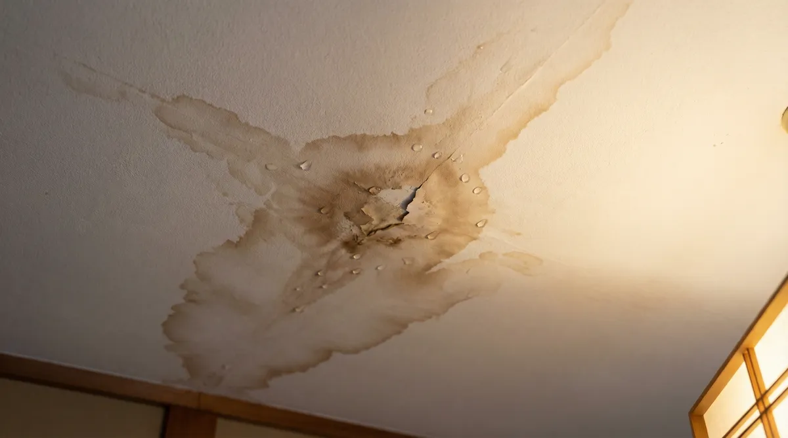

賃貸・マンションの雨漏りは誰の責任？連絡先と対応フロー

「賃貸なのに天井から雨漏りしてきた」「マンションの壁にシミが広がっている」——賃貸物件や分譲マンションで雨漏りに気づくと、戸建てとは違って「誰が修理費を払うのか」が分かりにくいのが悩みどころです。
この記事では、賃貸・分譲マンションそれぞれの連絡フローと、家財の被害や家賃に関する考え方の基本を整理しました。応急処置の詳しい手順は別記事「雨漏りの応急処置7選」にまとめています。保険の適用可否や個別の法律判断は、最終的に保険会社・弁護士・管理会社の判断になることを前提に読み進めてください。
まず確認：賃貸か分譲マンションか
雨漏りの連絡先は、住んでいる物件のタイプで変わります。賃貸物件なら貸主・管理会社、分譲マンションなら管理組合・管理会社が窓口になるのが基本の考え方です。自分で修理業者を手配する前に、まずどちらに連絡すべきかを整理しましょう。
- 賃貸（アパート・マンション）→ 管理会社・大家さんに連絡
- 分譲マンション（持ち家）→ 管理組合・管理会社に連絡（原因箇所によって対応が変わる）
- どちらの場合も、天井のシミや水滴は写真に残しておく
賃貸物件の場合の対応フロー
民法606条では、賃貸物件の修繕義務は原則として貸主（オーナー）側にあるとされています。管理会社は多くの場合、貸主から委託を受けて窓口になっている立場です。
① すぐにやること
室内の応急処置（バケツで受ける・家財を移動する）をしたうえで、管理会社または大家さんの緊急連絡先に連絡します。緊急連絡先は賃貸契約書や物件の掲示板に記載されていることが多いので、入居時に確認しておくと安心です。
② 連絡が取れない・対応してくれない場合
消費者庁が公開している賃貸住宅管理の相談事例では、雨漏りの修理を管理会社に依頼しても直らないケースや、修繕の依頼先（貸主か管理会社か）が借主に分かりにくいという課題が指摘されています。連絡した日時と内容はメールなど記録に残る形にしておくと、後のトラブルを避けやすくなります。
分譲マンションの場合（共用部分か専用部分か）
分譲マンションの場合は、雨漏りの原因が「共用部分」か「専用部分」かで窓口が変わります。屋上・外壁・バルコニーの排水設備など共用部分が原因と考えられる場合は管理組合・管理会社への連絡が、サッシのコーキングなど専用使用部分が原因の場合は所有者自身の対応になることが多いとされています。
ただし、どちらが原因かは専門業者の調査で初めて分かることが多く、自己判断で修理業者を手配する前に、まず管理会社・管理組合に状況を伝えておくと、後の費用負担の話がスムーズになります。
家財の被害・家賃の減額は請求できる？

雨漏りで家電や家具が濡れた場合の損害賠償、使えない部分が出た場合の家賃減額は、実際に相談事例としてよく挙がるテーマです。ただし認められるかどうかは、原因や契約内容など個別の事情によって変わります。自己判断で決めつけず、次の対応を基本にしてください。
- 被害を受けた家財・部屋の写真を日付が分かる形で残す
- 管理会社・大家さんへの連絡内容と日時を記録しておく
- 金額の大きい交渉になりそうな場合は、消費生活センターや弁護士に相談する
調査・見積もり無料の専門業者へ
※調査・見積もり無料。管理会社から「業者に見てもらって」と言われた場合にも使えます。
応急処置と火災保険・家財保険の扱い
室内でできる応急処置は、バケツとビニールシートで水を受け、濡れると困る家電・家具を移動することが基本です。詳しい手順は「雨漏りの応急処置7選」で解説しています。
賃貸の場合、建物自体の保険（火災保険）は貸主が契約しているのが一般的ですが、自分の家財の被害は入居者自身が契約する「家財保険」でカバーされる場合があります。賃貸契約時に加入した火災保険に家財保険が含まれているか、契約書や保険証券を確認してみましょう。
困ったときの相談先
管理会社・大家さんとの話し合いがうまく進まない場合は、消費者ホットライン「188（いやや！）」に電話すると、最寄りの消費生活センターにつながります。賃貸住宅の修繕トラブルは消費者庁にも相談事例として寄せられているテーマなので、一人で抱え込まず相談先を活用しましょう。
- 消費者ホットライン「188」で最寄りの消費生活センターに相談できる
- 交渉が大きくなる場合は弁護士・法テラスへの相談も検討する
- 分譲マンションの場合は管理組合の総会・理事会に相談するルートもある
よくある質問
賃貸で雨漏りに気づいたら、まず何をすればいい？
バケツや家財の移動などの応急処置をしたうえで、管理会社・大家さんの緊急連絡先に連絡してください。勝手に業者を呼んで修理すると費用を負担してもらえない場合があるため、応急処置以外の修理手配は管理会社の判断を待つのが基本です。
マンションの雨漏りは、管理組合と自分のどちらが対応するの？
屋上や外壁など共用部分が原因なら管理組合・管理会社、サッシなど専用使用部分が原因なら所有者自身の対応になることが多いとされています。ただしどちらが原因かは調査で分かることが多いため、まず管理会社に状況を伝えておくと安心です。
雨漏りで家電が壊れたら、必ず賠償してもらえる？
認められるかどうかは原因や契約内容など個別の事情によって変わるため、一概には言えません。被害状況の写真と連絡記録を残し、金額が大きい場合は消費生活センターや弁護士に相談することをおすすめします。
家財保険に入っていれば雨漏りの被害は必ず補償される？
補償の対象になるかは契約内容や被害の原因によって異なり、判断するのは保険会社です。まずは契約書や保険証券で家財保険が含まれているかを確認し、保険会社に問い合わせてみてください。